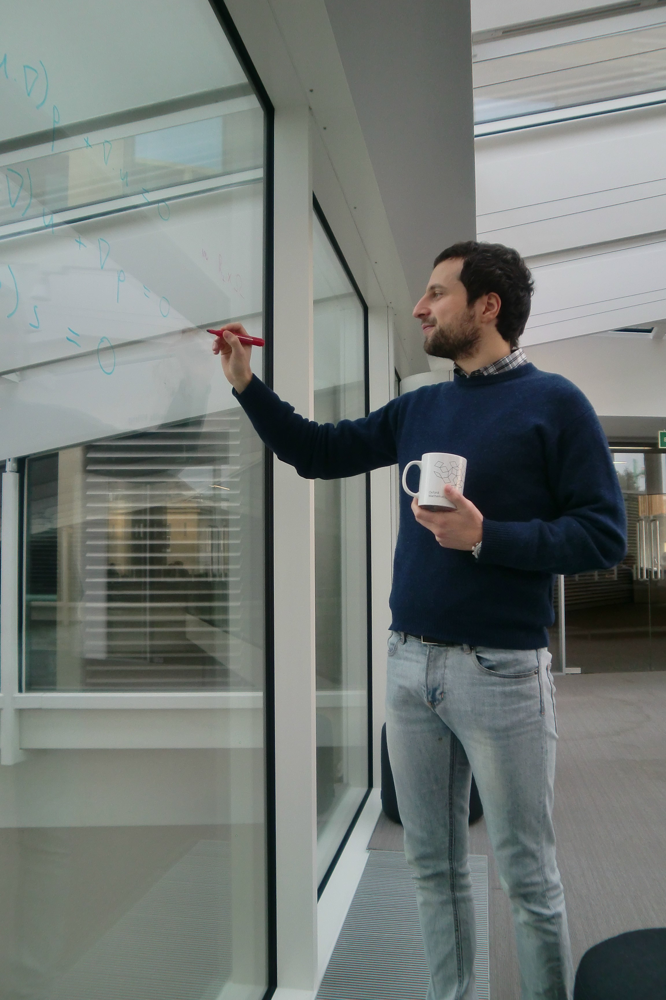
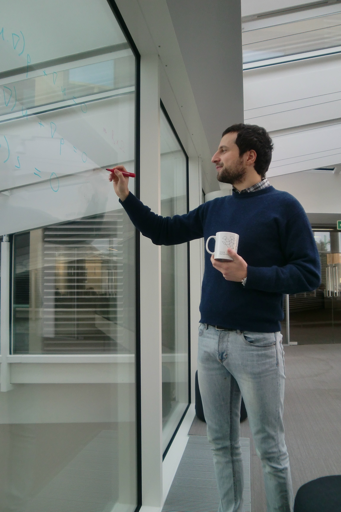

Giovanni S.
Alberti
D.Phil. (Oxon.)

D.Phil. (Oxon.)

Machine Learning Genoa (MaLGa) Center
Department of Mathematics
University of Genoa
Via Dodecaneso 35
16146 Genova
Italy
Email: ti.eginu@itrebla.innavoig
Phone: +39 010 353 6946
Links
Machine Learning Genoa CenterMathematical Institute, Oxford
Maths Department, ETH Zurich
Oxford Centre for Nonlinear PDE
Collaborators
Rima AlaifariHabib Ammari
Ángel Arroyo
Guillaume Bal
Francesca Bartolucci
Malcolm Brown
Paolo Campodonico
Yves Capdeboscq
Stephan Dahlke
Filippo De Mari
Ernesto De Vito
Michele Di Cristo
Alessandro Felisi
Hartmut Führ
Tandri Gauksson
Johannes Hertrich
Bangti Jin
Matti Lassas
Marco Marletta
Romain Petit
Yannick Privat
Luca Ratti
Francisco Romero
Matteo Santacesaria
Jin-Keun Seo
Silvia Sciutto
S. Ivan Trapasso
Stefano Vigogna
Timothée Wintz
Ian Wood
Social
Tweets by @GSAlberti
| Open positions |
I am constantly looking for motivated PhD students and Postdocs (funded by the ERC StG SAMPDE): if you are interested in working with me at MaLGa please email me a CV, a motivation letter, and the contacts of at least two referees.
| Bio and Events |
I am a professor in mathematical analysis at the Department of Mathematics of the University of Genoa. I received my PhD at the University of Oxford, and held two post-doctoral positions at the École Normale Supérieure in Paris and at ETH Zürich. My research focuses on partial differential equations, applied harmonic analysis, inverse problems and machine learning. I was the recipient of the Gioacchino Iapichino prize for Mathematical Analysis in 2017, of the Eurasian Association on Inverse Problems Young Scientist Award for distinguished contributions to inverse problems in 2018, and of a ERC Starting Grant 2021.
Full CV
Press (in Italian): TgR Liguria (2022), ERC Starting Grant 2021, Articolo su Secolo XIX (2019), I mestieri dei matematici (2017)
Recent and future events
- Speaker at Inverse Problems in the Physical Sciences, Puerto Varas, Chile, January 15-18, 2024
- Speaker at Statistics Seminar, University of Cambridge, February 16, 2024
- Speaker at SIAM Conference on Uncertainty Quantification, Trieste, Italy, February 27-March 1, 2024
- Speaker at International Conference on Elliptic and Parabolic Problems: GAETA 2024, Gaeta, Italy, May 20-25, 2024
- Speaker at AMS-UMI Joint Meeting, University of Palermo, July 23-26, 2024
- Speaker at Statistical aspects of non-linear inverse problems, University of Cambridge, September 17-19, 2024
- Speaker at Deep Learning for PDE-based Inverse Problems, Oberwolfach, October 27 - November 1, 2024
- Speaker at Applied Mathematics Seminar, Mathematics Institute, University of Warwick, November 29, 2024
- Speaker at Data-Enabled Science Seminar, Department of Mathematics, University of Houston, December 6, 2024
- Speaker at AIMS conference, NYU Abu Dhabi, December 16-20, 2024
- Speaker at Advanced Numerical Methods for Machine and Deep Learning, University of Ferrara, January 20-25, 2025
- Speaker at Geilo Winter Schools in eScience, Geilo, Norway, January 19-24, 2025
| Research |
Research interests
Partial differential equations, inverse problems, applied harmonic analysis, compressed sensing, mathematical imaging, machine learning.
Publications
Google ScholararXiv
Scopus
Web of Science
ResearchGate
MathSciNet
 orcid.org/0000-0002-8612-3663
orcid.org/0000-0002-8612-3663Editorial work
Communications on Analysis and ComputationInverse Problems
Numerical Functional Analysis and Optimization
SIAM Journal on Imaging Sciences
Inverse Problems in Science and Engineering (2019-2021)
| Presentations |
Selected talks
- Continuous generative neural networks - BASP 2023.
- Compressed sensing for the sparse Radon transform - Inverse problems in the desert, NYU Abu Dhabi, 2022.
- Regularity theory for Maxwell's equations - Online Seminar on Mathematical Methods in the Theory of Electromagnetism, 2021.
- Adversarial deformations for DNNs - Inverse Problems and Machine Learning workshop, CRM Montreal, 2019.
- Combining the Runge approximation and the Whitney embedding theorem in hybrid imaging - Reconstruction Methods for Inverse Problems, BIRS, Canada, 2019.
- Mathematical analysis of ultrafast ultrasound imaging - IPMS 2018, Malta.
- Calderón's Inverse Problem with a Finite Number of Measurements - Inverse Problems, Imaging and PDEs, IAS, Hong Kong, 2018.
- Mathematical analysis of ultrafast ultrasound imaging - Applied Inverse Problems Conference, Zhejiang University, Hangzhou, 2017.
- Non-zero constraints in quantitative coupled physics imaging - Quantitative Tomographic Imaging - Radon meets Bell and Maxwell, Ricam, Linz, 2017.
- Disjoint sparsity for signal separation and applications to hybrid imaging inverse problems - UCL Seminar, 2015.
- Using multiple frequencies to enforce non-zero constraints in PDE and applications to hybrid imaging problems - "Inverse Problem Seminar", IHP, Paris, 2015.
- Two-dimensional reproducing formulae arising from the metaplectic representation and their discretisation - "Real and complex manifolds: geometry, topology and harmonic analysis", Scuola Normale Superiore di Pisa, 2015.
- Elliptic regularity theory applied to time harmonic Maxwell's equations - "6th South West Regional PDE Winter School", University of Oxford, 2014.
Videos
- Compressed sensing for the sparse Radon transform - "Leveraging Model- and Data-Driven Methods in Medical Imaging", BIRS 2023.
- Regularity theory for Maxwell's equations - Cardiff Analysis Seminar, 2021.
- Infinite-dimensional inverse problems with finite measurements - OneWorld IMAGINE seminar, 2021.
- Infinite-dimensional inverse problems with finite measurements - "Statistical aspects of non-linear inverse problems", BIRS, Canada, 2021.
- Infinite-dimensional inverse problems with finite measurements - "IFIP TC7 Conference on System modeling and optimization", 2021.
- Frames of exponentials and compressed sensing photoacoustic tomography - "Inverse Problems for PDEs: A one day webinar in occasion of the 65th birthday of Sergio Vessella", 2020.
- Combining the Runge approximation and the Whitney embedding theorem in hybrid imaging - "Reconstruction Methods for Inverse Problems", BIRS, Canada, 2019.
- Disjoint sparsity for signal separation and applications to hybrid imaging inverse problems - "Hybrid Methods in Imaging", BIRS, Canada, 2015.
- Using multiple frequencies to satisfy local constraints - Course "Problèmes inverses hybrides" by Yves Capdeboscq, Collège de France, Paris, 2014.
- Using multiple frequencies to satisfy local constraints in PDE and applications to hybrid problems - "Problèmes inverses et imagerie", IHP Paris, 2014.